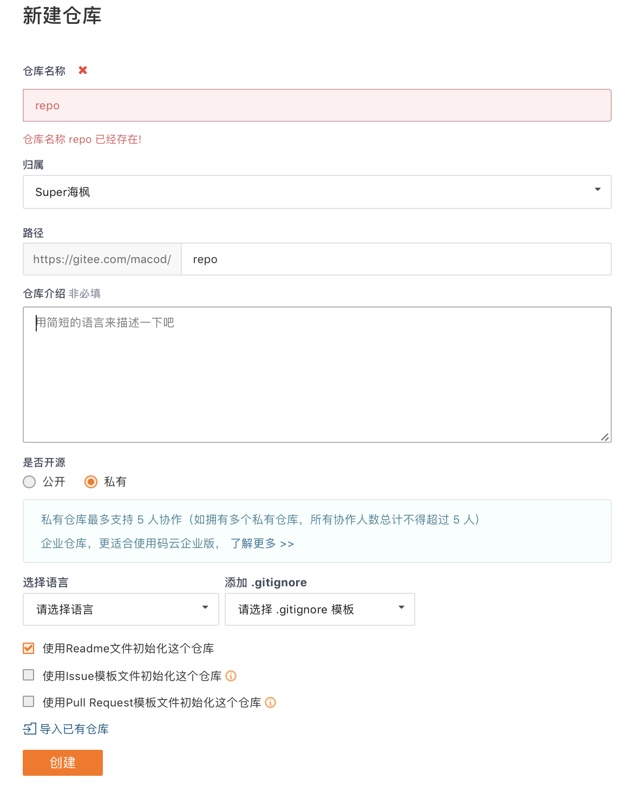

创建私有cocoapods仓库
我之前写了一篇打包公有组件到cocoapods仓库，但是随着我们项目的逐渐增大，公司内部也有一些私有的组件供公司内部项目的使用，这就需要我们创建私有的仓库来管理组件了，下面我们就使用pods库来管理我们的私有库。
一、创建版本库（repo）
首先我们需要在我们的项目管理（git或者svn）中创建我们自己的组件版本库（repo），如果已经创建过了，就无需再创建了，以下以码云为例（因为私有库免费）：

回到终端，将私有版本库添加到本地repo中，repo就是repository的缩写
$ pod repo add repo https://gitee.com/macod/repo.git
在Finder目录中～/.cocoapods/repos，发现增加了一个repo存储库，如果没有说明失败了
二、创建组件代码库
和创建版本库一样，只是要选择一下MIT License
将组组件代码仓库clone到本地，将打包的组件代码拷贝到项目中
使用：
$ pod spec create 组件名
创建.podspec文件，然后修改podspec文件中的内容，类似如下：
Pod::Spec.new do |spec|
spec.name = "SwipeView"
spec.version = "0.0.1"
spec.summary = "swipe view"
spec.description = "swipe view for iOS"
spec.homepage = "https://gitee.com/macod/SwipeView"
spec.license = { :type => "MIT", :file => "LICENSE" }
spec.author = { "zhangzhifang" => "zhangzhifang@zuinianqing.com" }
spec.platform = :ios, "7.0"
spec.source = { :git => "https://gitee.com/macod/SwipeView.git", :tag => "#{spec.version}" }
spec.source_files = "SwipeView/**/*.{h,m}"
spec.requires_arc = true
end
然后验证内容修改仓库配置是否正确
$ pod lib lint
根据错误进行修改
三、将描述文件推送到版本库
将项目打上tag推送到远程仓库，tag和版本号要对应
完成后将描述文件push到版本库
$ pod repo push repo 组件名.podspec —allow-warnings
这个过程其实就是:
1、拉取远程版本仓库repo
2、添加组件名.podspec文件到版本库中
3、push到远程
这时会对远程仓库进行验证，成功的话会在~/.cocoapods/repos/repo中发现新增的仓库信息了
若是出现错误信息
[!] The repo MyRepo at ../.cocoapods/repos/MyRepo is not clean
更新下我们的版本库，
$ pod repo update MyRepo
四、私有仓库的使用
使用私有仓库需要再Podfile文件中添加指明你的版本库地址
source 'https://gitee.com/macod/repo.git'
这里是版本库的地址
若是还使用了公有的pod库，需要把公有库地址也写上
source ‘https://github.com/CocoaPods/Specs.git’
Podfile类似这样:
source 'https://github.com/CocoaPods/Specs.git
source 'https://gitee.com/macod/repo.git'
target 'DevOCFramwork' do
pod "AFNetworking"
pod "SDWebImage"
pod "YYModel"
pod "FMDB"
pod "SVProgressHUD"
pod "pop"
pod "Masonry"
pod "SwipeView", '~> 0.0.1' #私有库
pod "RSA", '~> 0.0.2' #私有库
target 'DevOCFramworkTests' do
inherit! :search_paths
end
target 'DevOCFramworkUITests' do
inherit! :search_paths
end
end
最后pod install就好了
执行pod install命令时
1、会拉取远程Podfile中soruce标记版本库到本地的repos文件中
2、在版本库中搜索我们的 pod ’SwipeView’的SwipeView.podsepc文件
3、根据SwipeView.podspec文件中描述的源码地址下载并整合到项目中
注意⚠️
如果我们的私有库中组件名和公有库组件名相同了，在Podfile中pod后面不说明版本号的话，会默认导入公有库中的组件，所以我们创建组件的时候最好和公有库中的组件不要重名
当说明版本号的时候，私有库组件版本号在公有库中也有的话，也是默认导入公有库组件